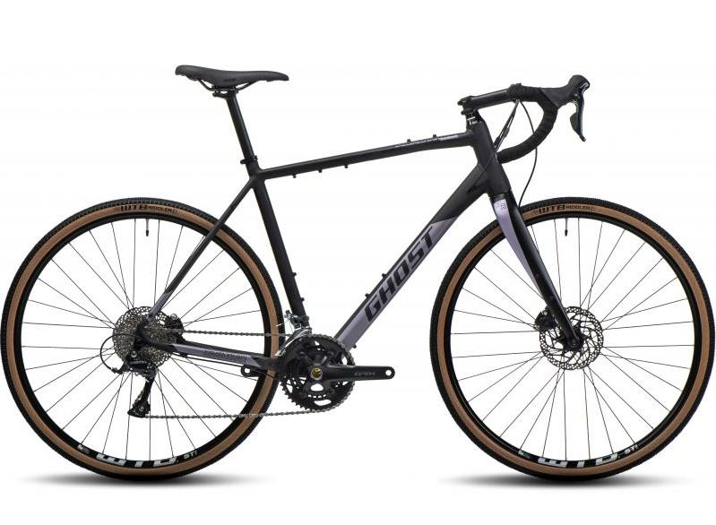

Hliníkový gravel bike GHOST Road Rage s pevnou karbonovou vidlicí vás překvapí svou praktičností, komfortem a spolehlivostí. Výbavu tvoří spolehlivá sada Shimano Sora s 2x9 převody a mechanické kotoučové brzdy.
Perfektní kolo na zimní tréninky nebo letní bikepacking – GHOST Road Rage snese obojí, a ještě mnohem víc.
Informace o kolu
- materiál karbon
- počet zubů 11-34
- počet převodů 2x9
- kliky Shimano FC-MT 210
- černá barva
Tabulka velikostí
| Velikost rámu | Velikost rámu(cm) | Výška postavy |
|---|---|---|
| XS | 34 | Pod 163 cm |
| S | 38 | 157-173 cm |
| M | 44 | 167-183 cm |
| L | 48 | 177-190cm |